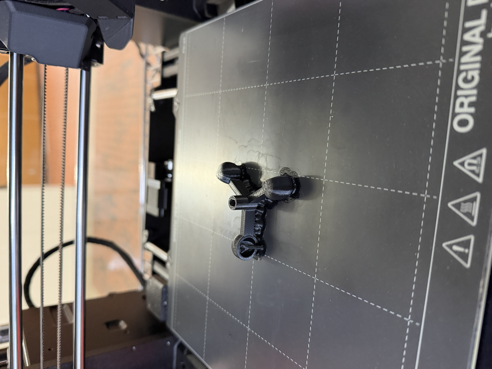
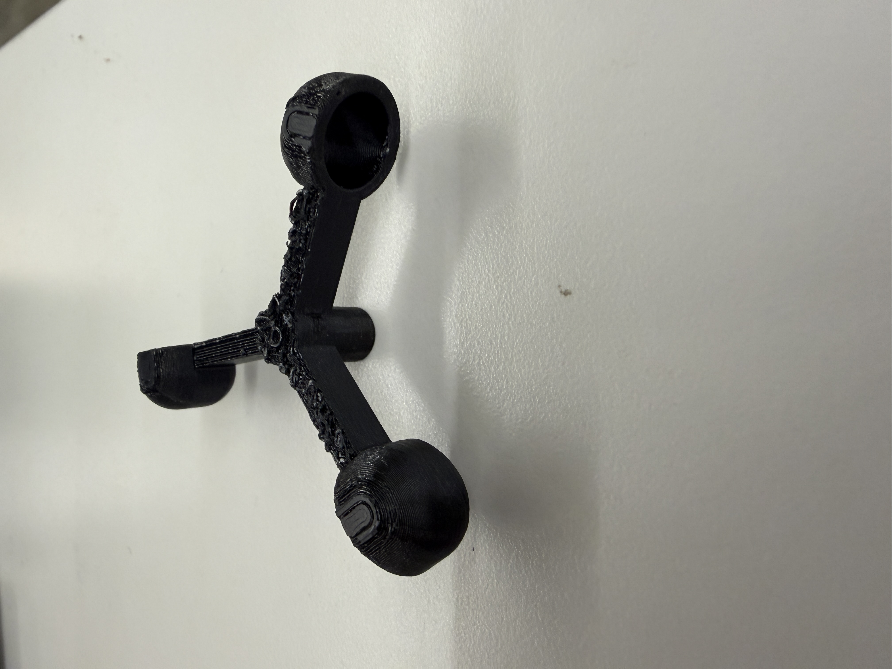
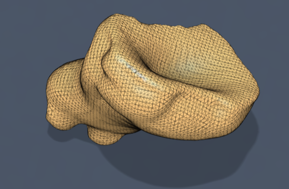
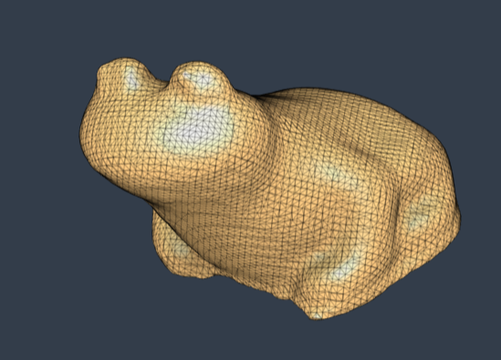

<div class="textcontainer">
<p class="margin"> </p>
<h3>Week 5: 3D Design & Printing</h3>
<h4>Assignment: Model and 3D print something</h4>
<br><br>
<h3> <b>Revised 5/14/2026</b> </h3>
After doing CNC week, I realized CNC could basically make the jellyfish bell, so I have added the anemometer from Week 9 as another thing I have CADded. Also check out the Final Project page to see the Anki clicker CAD!
<br><br>
<h5> Anemometer </h5>
Here is an anemometer I 3D modeled for Week 9. This would be hard to make using subtractive methods for several reasons including the cup shape being curved and hollow making it hard to cut out except if the machine can cut from both sides.
Modeling the anemometer was fairly simple - I made the motor attachment area, built up in a sketch, then used two extruded cylinders with fillets to make the first cup. After, I used the pattern feature to make 3 cups rotationally 120 degrees apart from the original shape.
I printed with supports because of the overhangs on the cups. I didn't do the best job removing the supports, but it is still functional.
<br><br>
<figure>
<p></p>
<p></p>
<figcaption> The anemometer just after it finished printing and after I removed supports
</figcaption>
</figure>
<p class="margin"> </p>
<div class="flexrow">
<a id="btn" href="../09_networking/Anemometer3DFiles.zip" download>Download anemometer 3D files
</a>
</div>
<p class="margin"> </p>
<h4>3D Scanning</h4>
My 3D Scanning object was a squishy frog toy I had. This would have bene hard to model in Fusion due to the organic curves of the frog and its squishiness leading to inconsistent measurements, so I 3D scanned it. I scanned from 3 different angles, the frog laying on its side, feet, and back which worked well. The eyes had a bit of trouble being scanned because they are black, but I was able to fill it in.
Shoutout Bobby for running a great lab and supervising my 3D scan!
<p class="margin"> </p>
<div class="flexrow">
<a id="btn" href="./2026-02-27 Frog 3D Scan.zip" download>Download the .stl Frog Scan
</a>
</div>
<p class="margin"> </p>
<figure>
<img src="./Scanned Frog.jpg" alt="The scanned frog in question" width=25% height=13%>
<p></p>
<p></p>
<figcaption> The frog in question and the scan from two angles
</figcaption>
</figure>
<br><br>
<h4> Jellyfish Bell </h4>
This week I wanted to continue working on the lava lamp design, but specifically the jellyfish. While the tentacle testing will have to wait until the rest of the structure is assembled, I decided to print a prototype of the jellyfish bell.
This dome would be hard to make with laser cutting because of its 3D naure and curved edges. Gluing multiple layers together would likely require sanding or carving of the final product.
I don't know the specifics of CNCing, but I suspect it would be hard to get the tight spacing between the curves of the rim.
<br><br>
<h4>CAD</h4>
I used Autodesk Fusion360 to make the jellyfish bell shape. First, I sketched the base, a circle plus arcs that follow a circular pattern around the rim. Then, I lofted the base to a smaller circle and added a large filet to the top to create the curved dome. Finally, I added a hole for the string.
Post-printing, I removed the support. I also had to drill out the center hole because it was too small (oops forgot about tolerances). I revised the Fusion file to make the hole bigger.
Shoutout Tolu for helping me decide to print the bell upside down so the supports wouldn't get stuck inside!
<figure>
<img src="./Jellyfish Bell with Support.JPG" alt="Jellyfish bell with supports" width=37% height=13%>
<img src="./Jellyfish Bell without Support.JPG" alt="Jellyfish bell without supports" width=37% height=13%>
<figcaption> Jellyfish bell with (L) and without supports (R)
</figcaption>
</figure>
<br><br>
<h4>Final Project Plan</h4>
My final project will have three main parts:
<ul>
1. Phone jail
<br>
2. Anki clicker
<br>
3. Jellyfish lava lamp
</ul>
<br>
<h5>Materials List</h5>
<ul>
~ Laser cut wood sheets (phone jail box, lava lamp base)
<br>
~ 3 microcontrollers (one for phone jail, one for clicker, one for lava lamp)
<br>
~ 3 breadboards or circuitboard equivalent (one for each part)
<br>
~ Some kind of round waterproof container for the jellyfish (more elevated than dhall cup)
<br>
~ Buttons, wires, and other circuit materials
<br>
~ 2 motors (one for phone jail, one for jellyfish lava lamp)
<br>
~ Wood or metal CNC'ed (?) for Anki clicker
<br>
~ Some kind of wrist strap for Anki clicker
</ul>
<h4>Future Plans</h4>
<ul>
1. Find fiberoptic cables to add from the top and potentially for tentacles
<br>
2. Attach tentacles and figure out buoyancy weight for 15% infill
<br>
3. Increase CAD hole so I don't have to drill a hole in each new iteration (diameter 1mm --> 2mm, haven't printed it to test. The hole can't be too big or else it the rope hole might be harder to block with a knot)
</ul>
</div>